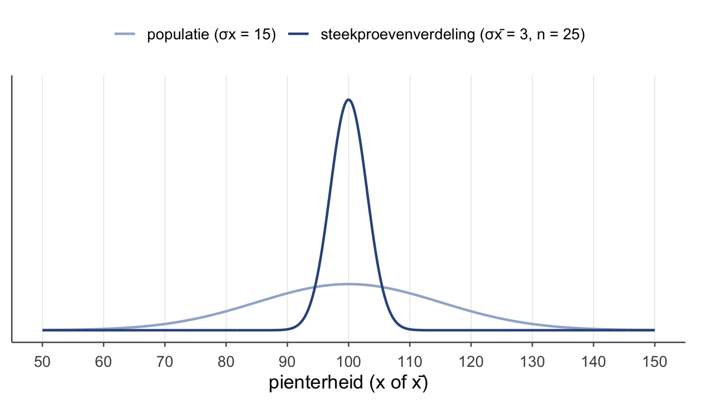
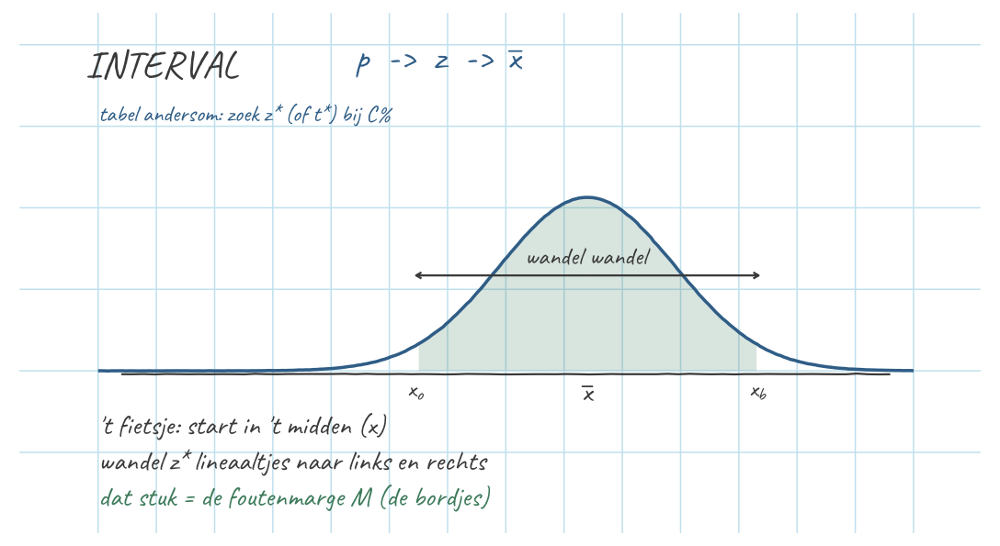

Thema 7 · Steekproevenverdeling & betrouwbaarheidsinterval
Deel 4 — Van steekproef naar populatie · de bordjes
Van één egel naar een hele steekproef
Tot nu toe keken we naar de score van één egel. Nu nemen we een hele steekproef — zeg 25 egels — en kijken naar hun gemiddelde. Want in de praktijk zien we de populatie nooit; we hebben alleen een steekproef, en daarmee willen we iets zeggen over alle egels. Dit is de stap naar inferentie: van steekproef naar populatie.
Drie verdelingen — niet door elkaar halen
Dit is hét struikelpunt van het hele vak, dus we maken het scherp. Er zijn drie verdelingen:
- Populatieverdeling — de pienterheid \(x\) van alle egels, met als centrum \(\mu_x = 100\) (een parameter: één vast getal, meestal onbekend — de p–p uit thema 1, populatie → parameter). \(N(100, 15)\).
- Verdeling binnen één steekproef — de 25 losse \(x\)-scores in één steekproef, met als centrum het steekproefgemiddelde \(\bar{x}\) van díe steekproef (een statistiek: de st–st uit thema 1, steekproef → statistiek — en hij valt per steekproef anders uit). Een klein, hobbelig wolkje. (Let op: sommige boeken noemen steekproevenverdeling juist de derde — wij houden die naam strikt voor de bordjes.)
- Steekproevenverdeling — de verdeling van het stéékproefgemiddelde \(\bar{x}\) over heel veel steekproeven. Op het bordje staat geen \(x\), maar \(\bar{x}\).
Die derde is de nieuwe, en de belangrijkste. Voel het verschil tussen de twee centra: \(\mu_x\) is één vast getal (al kennen we het meestal niet), terwijl \(\bar{x}\) per steekproef opnieuw uitvalt — en juist omdat \(\bar{x}\) varieert, krijgt hij zélf een verdeling. Dat is precies nummer 3.
De bordjes — het spelletje, opnieuw
Herinner je het spelletje uit thema 1 (er komt iets binnen, wat is je beste gok?). Nu schalen we het op:
Jullie nemen állemaal een steekproef van 25 egels, rekenen het gemiddelde uit, schrijven dat op een bordje, en hangen het op. Ik kom langs en gok wat erop staat. Mijn beste gok: 100 (het populatiegemiddelde). Maar het ene bordje zegt 103, het andere 97 — ze wijken af.
Vroeger (thema 1) vroegen we: hoeveel mist één egel het gemiddelde? Nu vragen we: hoeveel mist één bordje (één steekproefgemiddelde) het echte gemiddelde? Die afwijking van een bordje is weer een gokfout. En de gemiddelde gokfout van een bordje is de standaardafwijking van het steekproefgemiddelde — die noemen we de standaardfout, \(\sigma_{\bar{x}}\).
De standaardfout
\[\sigma_{\bar{x}} = \frac{\sigma_x}{\sqrt{n}} = \frac{15}{\sqrt{25}} = \frac{15}{5} = 3\]
(Herinner je uit thema 4: een variantie schaalt met het kwadraat van een factor. Een gemiddelde is een gewogen optelling; daar valt de \(\sqrt{n}\) uit — dáárom \(\sqrt{n}\).) Speel met \(n\) en je ziet de theorie:
| \(n\) | \(\sigma_{\bar{x}} = 15/\sqrt{n}\) |
|---|---|
| 9 | 5 |
| 25 | 3 |
| 100 | 1,5 |
Hoe groter de steekproef, hoe dichter de bordjes bij elkaar liggen — hoe preciezer je schatting.
Het betrouwbaarheidsinterval
We vonden in onze enige echte steekproef \(\bar{x} = 106\). Dat is onze puntschatting van \(\mu_x\). Maar één getal is te stellig — we geven een range eromheen waarvan we redelijk zeker zijn dat de ware \(\mu_x\) erin ligt:
\[\bar{x} \pm z^* \cdot \sigma_{\bar{x}}\]
Voor 95% zekerheid is \(z^* = 1{,}96\) (de heilige z-waarde). Dus:
\[106 \pm 1{,}96 \cdot 3 = 106 \pm 5{,}88 = [\,100{,}12\,;\,111{,}88\,]\]
Dat stuk dat je naar links én rechts gaat, \(M = z^* \cdot \sigma_{\bar{x}} = 5{,}88\), heet de foutenmarge (de halve breedte). De \(z^*\)-waarden uit je hoofd: 90% → 1,645; 95% → 1,96; 99% → 2,576.

Foutenmarge en steekproefgrootte
De foutenmarge hangt af van \(n\): meer egels → kleinere \(M\). Andersom kun je vooraf uitrekenen hoeveel egels je nodig hebt voor een gewenste precisie. Wil je \(M \le 2\) bij 95% (\(\sigma_x = 15\))?
\[n = \left(\frac{z^* \cdot \sigma_x}{M}\right)^2 = \left(\frac{1{,}96 \cdot 15}{2}\right)^2 = 14{,}7^2 = 216{,}09 \;\to\; 217\]
(Naar boven afronden — met 216 zit je nog net boven de grens; meer egels = kleinere marge.)
Oefenen
Wat blijft liggen
Hier gebruiken we \(\sigma_x\) alsof we ’m kennen. In de echte wereld ken je de populatie-standaardafwijking nooit (alleen God) — dan schat je ’m met \(s_x\) uit de steekproef, wordt het lineaaltje de standaardfout \(s_x/\sqrt{n}\), en gebruik je de \(t\)-verdeling in plaats van \(z\). Dat komt in thema 9. En in thema 8 draaien we de vraag om: niet “wat is \(\mu_x\)?”, maar “ís \(\mu_x\) gelijk aan een bepaalde waarde?” — dan toetsen we.
Tot slot
Hang al die bordjes op en je ziet het: ze klitten samen rond de 100, veel dichter dan losse egels ooit doen — want een gemiddelde middelt de uitschieters weg. Hoe meer egels per bordje, hoe strakker dat klitten, en die strakheid is precies de standaardfout \(\sigma_x/\sqrt{n}\). Daar hang je je betrouwbaarheidsinterval omheen, en zelfs dat is geen nieuwe truc: hetzelfde fietsje van thema 3, alleen rijdt het nu met de standaardfout als lineaaltje.
Tot nu toe vroegen we: wat is \(\mu_x\)? Een getal, met een marge eromheen. In het volgende thema draaien we ’m om — ís \(\mu_x\) eigenlijk wel die ene waarde die ze beweren? Dan zijn we aan het toetsen.
Werkboek OZP 1 · Thema 7, versie 0.1 (handrekenen & theorie). Doorlopend voorbeeld: de egels.